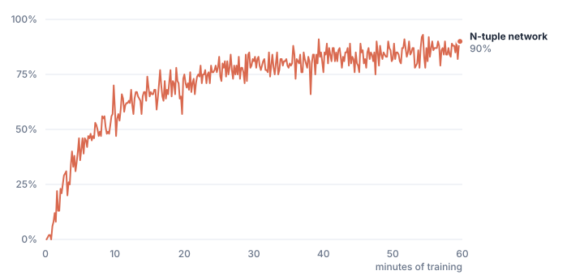
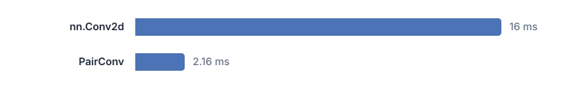
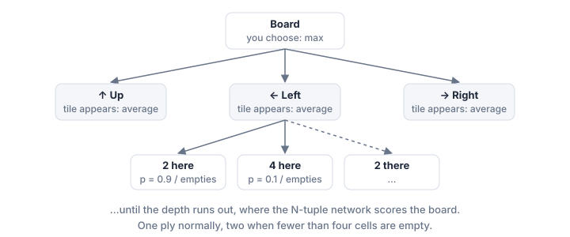
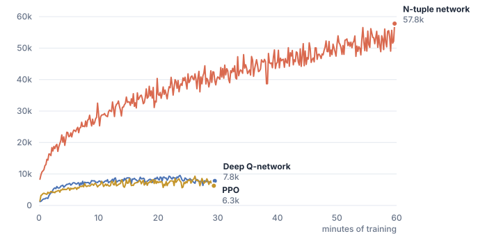
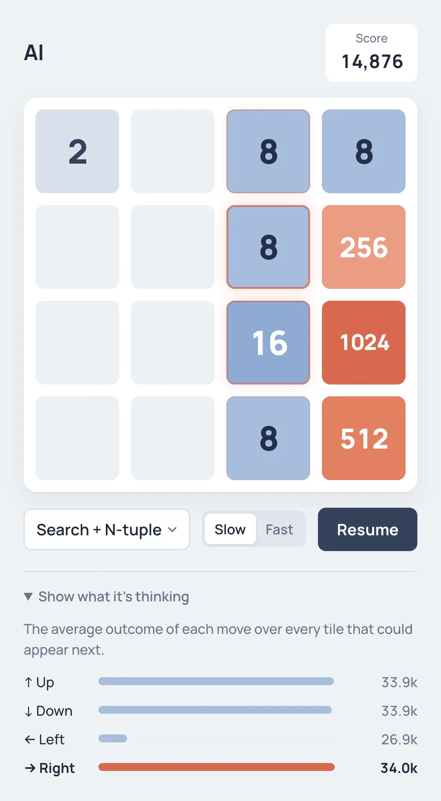
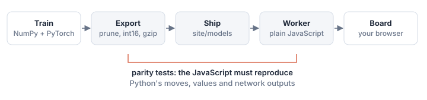

How I built Twos
A game of 2048 with a trained model playing the same tiles beside you. This is the path from one question about search versus learning to five models running in your browser, including the version I threw away.
- 5 ways to play, from a hand-written rule to search on top of learning
- 55,022 games the best model played against itself while learning
- 0 servers: every model runs in your browser
It started in 15-112
In the fall of 2025 I took 15-112, Carnegie Mellon's introductory programming course, with Professor David Kosbie. The course has a reputation for volume: a lot of problems, each one built up in small pieces, each piece tested before you move on. When I later asked Kosbie what the secret of the course was, his answer was refreshingly plain.
“I hate to say it, but the secret is volume.”
David Kosbie, on my podcast
That habit of building small and testing everything ended up being the backbone of this project. So did the other thing 112 gave me: the confidence that a game is just a program, and a program is something I can take apart.
Watching Code Bullet beat it
Around the same time I watched Code Bullet's AI learns to play 2048. He builds the game from scratch and then an AI that plays it, and his project describes the approach as a look-ahead algorithm: try the moves, see where they lead, pick the best.
What stuck with me was the question underneath it. His AI searches. Most of the reinforcement learning I had read about learns from experience instead, playing thousands of games and slowly getting better. Which one actually works better on a game like this? And could you combine them? That question became the project.
Trying it myself first
I talked with Kosbie about how AI is changing the way students learn in an episode of my podcast (Spotify, YouTube, and my write-up). He passed along a framing from Zico Kolter, who heads CMU's machine learning department, that I keep coming back to.
“AI is great at helping you do things you can already do.”
Zico Kolter, as Kosbie told it
The other half of that idea is the warning: it is dangerous when it does things for you that you cannot do. So before touching any learning algorithm, I started with the parts I could reason through on paper: the rules of the game, and a strategy for playing it. When I did lean on AI tools later, I tried to hold myself to that line. Use them to go faster on pieces I could already explain, and make sure I could explain every piece by the end. This page is partly that explanation.
The rules are trickier than they look
2048 looks simple until you write it down. A tile can only merge once per move, so a row of
2 2 2 2 slides left to 4 4, not 8. A row of 2 2 4
becomes 4 4, because the new 4 doesn't get to merge again. When three equal tiles line up,
the pair nearest the wall merges first. A move that changes nothing doesn't count, and no new tile
appears. I wrote each of those as a unit test before writing the code that passes it, which is the
most 112 thing in this whole project.
For speed I store each tile as its exponent (2 is 1, 4 is 2, 2048 is 11), which fits in four bits. A row of four tiles then packs into a 16-bit number, and there are only 65,536 possible rows, so I solve every one of them once when the program starts. After that, every move in every direction is a flip or transpose of the board plus four lookups. One game runs at about 23,000 moves a second in Python, and the neural networks later trained on batches of 32 to 64 games at once.

My strategy, written down
The way most people learn to play 2048 is to pick a corner, park the biggest tile there, and keep a descending chain behind it so merges keep cascading toward the corner. I turned that into a heuristic: a score for any board that rewards big tiles near the corner along a snake-shaped path, empty cells, and neighbouring tiles that can merge, and penalises big jumps between neighbours. The player looks one move ahead and picks whichever move leads to the best-scoring board.
It worked better than I expected. Random moves average about 1,000 points. The heuristic averages 10,007 and reaches 2048 in 7% of games. That number became the bar: any learning method that couldn't beat my hand-written rule wasn't learning anything worth having.
Version one: a lab, not a game
My first full build was a sandbox. A Python server (FastAPI) ran the game and streamed every board over a WebSocket to a dashboard with an agent picker, the agent's value for each move, a heatmap, live training charts, saved checkpoints, and an arena that benchmarked every agent on the same games. As a tool for me, it was great. It is where everything in the next section was trained and compared.
As something anyone else would use, it failed in two ways. The game lived on the server, so every
visitor shared one board: if one person lost, everyone had lost. And a one-line CSS bug meant the
game-over message could never hide. The overlay set display: grid, which quietly overrides
HTML's hidden attribute, so the board announced "No moves left" before anyone had made a
move. You can see it in the screenshot above. Both of those pushed me toward the second version, but
first, the models.
Five ways to play
Every approach plays the same game, framed the same way: a Markov decision process. The state is the board, the action is one of four moves, and the reward is the points from whatever merged. What separates the methods is how they decide, and, for the ones that learn, what they are trained to make small. That quantity is the loss function, and I've written each one out below because it says more about a method than any description.
1. The heuristic
Covered above: a score I designed by hand, and a one-move lookahead. It's in the lineup as the floor.
Loss function
None. Nothing is learned; every weight in the score is a number I picked and tuned by watching it play.
2. The N-tuple network, trained with temporal-difference learning
This is the approach most 2048 research builds on, and the one I read about in Yeh et al. (2016). Instead of a neural network, the value of a board is a sum of numbers looked up in big tables. Four patterns of six cells each are laid over the board in all eight rotations and reflections, and each placement reads the tiles under it as an index into that pattern's table. Thirty-two lookups, added up, is the network's opinion of the board.

It values afterstates: the board right after my slide, before the random tile lands. That detail matters more than it sounds. The randomness of where a tile appears is the part I can't control, so learning the value of the board just before it strips the noise out of what the network is asked to learn. To choose a move, it adds the merge reward to the value of the resulting afterstate and takes the best.
It learns with temporal-difference learning: after each move, nudge the value of where I was toward the reward I got plus the value of where I ended up. I run the updates backwards from the end of each game, so the final outcome reaches the early moves in one pass instead of creeping back one game at a time.
Loss function: the TD error
s′ is an afterstate and r the points from the next move. Each step adds αδ/32 to each of the 32 weights that were active, with α = 0.1. Because the value is a plain sum, that is exactly a gradient step on L, and it only ever touches 32 numbers.
It learned fast. In a 60-minute run it played 55,022 games against itself, and the share of its recent games reaching 2048 went from zero to 90%.

3. The deep Q-network
Deep Q-learning is the method famous for learning Atari games from pixels. Here a convolutional network reads the board as sixteen one-hot planes, one per tile value, so that a 1024 next to a 2048 looks as different as it is. It outputs a Q-value for each move: how many more points it expects if it makes that move and plays well afterwards. The convolutions are 2×2, which covers exactly the pairs of neighbours that can merge.

The rest is the standard recipe, plus two choices specific to this game. It plays 32 games at once and stores 200,000 recent moves in a replay buffer to train on. It explores randomly at first and less over time. A slowly-updated copy of the network supplies the targets so it isn't chasing itself. The two 2048-specific choices: illegal moves are masked out rather than punished, and rewards are squashed with a logarithm, because a 2048 merge is worth a thousand times a 4 merge and raw points made the targets explode late in games.
Loss function: Huber loss on the Double DQN target
The online network θ picks the next move and the slow copy θ⁻ scores it, which keeps Q-learning from overrating moves. γ = 0.99, and Huber loss behaves like squared error for small mistakes and like absolute error for big ones, so one wild target can't wreck a batch.
My first DQN trained painfully slowly, about 1,000 moves a second. I profiled it expecting my own code to be the problem, and it wasn't: PyTorch's CPU convolution, on a build without Intel's MKLDNN library, spent 16 milliseconds a step on convolutions this tiny. A 2×2 convolution is the same math as multiplying stacked 2×2 patches by a matrix, so I wrote it that way, proved it identical with a unit test, and got a 7× faster training step.

After 30 minutes and about 15,500 games, it averaged 7,687 in the benchmark and reached 2048 in 3% of games. Below my heuristic.
4. PPO
Proximal policy optimization learns a policy directly, a probability for each move, rather than a value for each. It is an actor-critic method: the same network body has a policy head (the actor) and a value head (the critic) that estimates how good the position is, so the actor can be told whether a move turned out better or worse than expected. It plays 64 games for 128 moves, learns from that batch for four passes, and repeats.
Masking mattered even more here. Late in a game there are often only one or two legal moves, and an unmasked policy wastes most of its probability learning that the others do nothing. I set illegal moves' scores to a huge negative number before the softmax. Not negative infinity, which turns the entropy term into "zero times infinity" and fills the training with NaNs.
Loss function: the clipped surrogate objective
 is the advantage, how much better a move went than the critic expected, estimated with GAE (λ = 0.95). Clipping ρ to within ε = 0.2 of 1 stops a single batch from moving the policy too far. The second term trains the critic, and the entropy bonus H keeps it exploring.
After 30 minutes and about 52,700 games, it averaged 7,351 and never reached 2048. Also below my heuristic.
5. Search on top of learning
This is where Code Bullet's idea came back. Expectimax search looks ahead the way he did, but treats the game honestly: I choose my move, so it takes the best move, but the game chooses where the next tile lands, so it averages over every empty cell with a 2 (90%) or a 4 (10%). Instead of searching until the game ends, it stops after one or two levels and asks the N-tuple network how good the board looks.

It searches one level normally and two when fewer than four cells are empty. Crowded boards are the most dangerous and also the cheapest to search, because there are few places a tile can land.
Loss function
None of its own. It borrows everything the N-tuple network learned and spends computation instead: the value of a move is its reward plus the probability-weighted best value of every board the next tile could create.
How they compare

The neural networks got half the training time, so this isn't a perfectly fair fight. But look at the shape: their curves had flattened, while the N-tuple network was still climbing at the hour mark. I think the reason is structure. The N-tuple network starts out knowing which groups of cells matter and only has to learn the numbers. The networks have to discover that structure from scratch, in a game where a single bad move can lose thousands of moves of progress.

So the answer to the question Code Bullet left me with: search and learning are better together. Learning alone scored five and a half times my heuristic, and adding a shallow search on top doubled that again.
Version two: a game first
With the models working, I went back to the problem with version one. I wanted someone to land on the page and simply play: no panels, no charts, nothing to read first. So I rebuilt it around the game. Your board is on the left. A model plays its own board on the right. Everything the dashboard used to show is still there, behind a single "Show what it's thinking" toggle.

One detail I'm proud of: both boards draw their new tiles from the same seeded random sequence. You and the model get the same luck, as far as two different games allow, so the comparison means something. Press New game and both boards restart from one new seed. And when the model finishes, Run again replays the exact same tiles, which makes switching models a fair head-to-head.


For the glow, each model explains itself in its own terms. For the N-tuple models, every active table weight is spread over the tiles its pattern covers. For the neural networks I use occlusion: take one tile away, run the network again, and see how much its answer moves.
Running every model in your browser
Version one needed a Python server for every move. Version two has no server at all. I trained the models in Python, exported their weights to small files, and rewrote the game and all five players in plain JavaScript that runs in a background thread (a web worker), so the animations never stutter while the search is thinking. The neural network forward pass is about a hundred lines with no libraries, and because the input is one-hot, its first layer doesn't even multiply: each tile just selects a column of weights.

Two implementations of the same thing will drift apart unless something stops them. So the exporter also writes test cases: real positions, with Python's answers for every move, every board value, every search result and every network output, computed from the exact weights the browser downloads. The JavaScript tests have to reproduce all of them, and they run on every push.
Fitting the model through a phone connection
The full N-tuple tables would be 268 MB. Training only ever touches a fraction of the entries, so I ship just those: sorted keys stored as the gaps between them, which compress well, and weights stored as 16-bit integers with one scale per table. That still left 10 MB. So I ran a sweep, dropping every weight below a threshold and measuring the search at each step. The answer surprised me: weights under 50 points are close to noise. Dropping them cut the file to 1.6 MB with no measurable loss in strength.


What I'd tell myself at the start
- Build the boring parts first, and test them. The merge rules hide more edge cases than you'd think. Every model after that stood on them, and so did the browser port.
- Search and learning beat either one alone. The best player here is a shallow search with learned judgement at the leaves.
- Structure beats size. A model that knows which cells to look at learned in minutes what the neural networks hadn't learned in half an hour.
- Measure before guessing. I was sure the slow DQN was my fault, and sure every weight mattered. Profiling and a sweep said otherwise both times.
- Build for the person using it. Version one was the right tool for me and the wrong page for everyone else.
What's next
The N-tuple network was still improving when I stopped it, so the obvious next step is to train longer, and to try the multi-stage version from the Yeh paper, which uses separate tables for the early and late game. I'd also like to give the neural networks a fair rematch with equal training time and a few upgrades, like multi-step returns, and see how close they can get. And if a deeper search can stay fast enough in the browser, I want to know how often it reaches 8192.